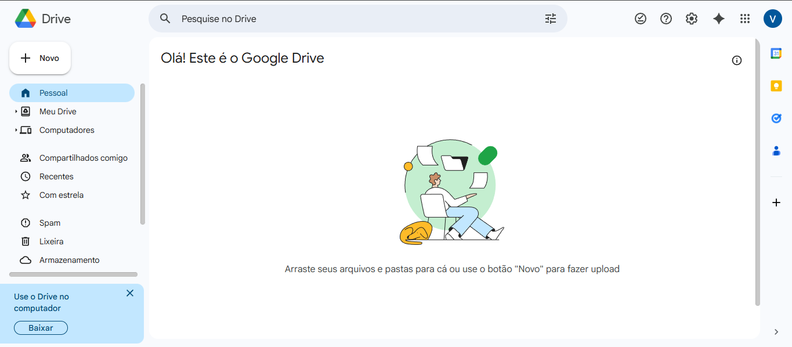

O Que Você Vai Aprender
- Por que fazer backup digital dos seus documentos importantes
- Como acessar e usar o Google Drive (15 GB gratuitos)
- Como criar estrutura de 5 pastas essenciais para organizar tudo
- Como escanear documentos usando apenas o celular (app Google Drive)
- Como ativar backup automático de fotos do celular
- Como compartilhar arquivos com segurança (link com proteção)
- A regra 3-2-1 de backup: 3 cópias, 2 lugares, 1 na nuvem
- Como recuperar arquivos excluídos acidentalmente
Antes de Começar: Você vai precisar de conta Google (Gmail), celular com câmera OU scanner, computador ou celular com internet, seus documentos físicos em mãos (RG, CPF, contas, etc) e cerca de 1 hora livre. Investir tempo organizando agora vai te poupar MUITO tempo e estresse no futuro!
1
Por Que Fazer Backup Digital
Entenda a importância: Documentos físicos podem ser perdidos, roubados, queimados ou se deteriorar com o tempo. Backup digital é seguro!
Situações que você evita com backup:
- Perdeu documentos: Carteira roubada, papéis extraviados em mudança
- Acidentes: Incêndio, inundação, mofo destruindo papéis
- Emergências: Precisa de exame médico urgente e está em outra cidade
- Oportunidades: Vaga de emprego pede documentos e você não tem em mãos
- Processos: Precisa comprovar algo e não acha a nota fiscal ou recibo
- Memórias: Fotos antigas de família que não podem ser substituídas
História real: Em 2023, milhares de famílias perderam TUDO em enchentes no RS. Quem tinha backup digital conseguiu recuperar documentos essenciais. Quem não tinha, ficou meses tentando segunda via de tudo. Não espere acontecer com você!
Vantagens do backup digital: Acesso de qualquer lugar, busca rápida, não ocupa espaço físico, pode compartilhar facilmente, múltiplas cópias automáticas, e é GRÁTIS (até 15 GB no Google Drive)!
2
Acessar Google Drive (15 GB Grátis)
Seu cofre digital gratuito: O Google oferece 15 GB de espaço grátis - suficiente para guardar milhares de documentos!
Como acessar pelo computador:
- Abra seu navegador (Chrome, Firefox, Edge)
- Acesse:
drive.google.com
- Faça login com sua conta Google (Gmail)
- Pronto! Você está no seu Drive
Como usar pelo celular:
- Abra a Play Store (Android) ou App Store (iPhone)
- Procure por: "Google Drive"
- Baixe e instale o aplicativo (é gratuito)
- Abra o app e faça login com sua conta Google
- Permita o acesso à câmera e arquivos quando solicitado

Interface inicial do Google Drive no navegador
Espaço gratuito: Você tem 15 GB compartilhados entre Google Drive, Gmail e Fotos Google. É muito espaço! Para ter ideia: 1 foto ocupa cerca de 3 MB, 1 documento escaneado uns 500 KB. Você consegue guardar milhares de arquivos!
Segurança: Use uma senha FORTE na sua conta Google! Se alguém acessar sua conta, terá acesso aos seus documentos. Ative também a verificação em duas etapas (Tutorial 4 ensina isso).
3
Criar Estrutura de 5 Pastas Essenciais
Organização é tudo: Crie uma estrutura de pastas clara para encontrar qualquer documento em segundos!
Como criar pastas:
- No Google Drive, clique em "Novo" (botão com sinal de +)
- Selecione "Nova pasta"
- Digite o nome da pasta
- Clique em "Criar"
- Repita para criar todas as 5 pastas principais
Estrutura Recomendada
1. Documentos Pessoais
→ RG, CPF, Certidões (nascimento, casamento)
→ CNH (Carteira de motorista)
→ Título de eleitor, Reservista
→ Passaporte (se tiver)
→ Carteira de trabalho digital
2. Financeiro
→ Declaração de Imposto de Renda (últimos 5 anos)
→ Contratos (financiamento, empréstimo)
→ Comprovantes de pagamento importantes
→ Extratos bancários relevantes
→ Notas fiscais de compras grandes
3. Saúde
→ Exames laboratoriais
→ Receitas médicas
→ Atestados
→ Carteirinhas (plano de saúde, SUS)
→ Carteira de vacinação
4. Casa
→ Contrato de aluguel ou escritura
→ Contas (luz, água, internet) - últimas 3
→ IPTU
→ Documentos do imóvel
→ Garantias de eletrodomésticos
5. Fotos Importantes
→ Fotos de família
→ Documentos antigos digitalizados
→ Diplomas e certificados
→ Fotos de bens (casa, carro, móveis) para seguro
→ Momentos especiais
Dica de organização: Dentro de cada pasta principal, você pode criar subpastas por ano ou por tipo. Exemplo: dentro de "Saúde" → crie "Exames 2024", "Receitas", "Carteirinhas". Mantenha simples!
Nomeie bem os arquivos: Use nomes claros: "RG_Frente_JoaoSilva.pdf", "ContaLuz_Dez2024.pdf", "Exame_Sangue_15Dez2024.pdf". Assim você encontra rapidinho!
4
Escanear Documentos Pelo Celular
Transforme seu celular em scanner: O app Google Drive tem função de scanner embutida - grátis e funciona muito bem!
Como escanear documentos:
- Abra o aplicativo Google Drive no celular
- Toque no botão "+" (geralmente no canto inferior direito)
- Selecione "Digitalizar" ou "Scan"
- Posicione o documento em uma superfície plana com boa iluminação
- Aponte a câmera para o documento
- O app detecta automaticamente as bordas - toque no botão de captura
- Ajuste os cantos se necessário (arraste os pontinhos)
- Toque em "OK" ou "✓"
- Se o documento tem frente e verso, toque em "+" para adicionar mais páginas
- Quando terminar, toque em "Salvar"
- Escolha a pasta de destino e dê um nome claro
- Toque em "Salvar" novamente
Dicas para scan perfeito: Use luz natural ou ambiente bem iluminado, deixe o documento reto e totalmente visível, evite sombras da sua mão ou do celular, para documentos com fundo colorido ajuste o contraste nas opções, e sempre escaneie frente E verso de documentos.
Qualidade automática: O Google Drive converte automaticamente para PDF e melhora a qualidade (retira sombras, corrige perspectiva). Fica tão bom quanto scanner profissional!
Documentos sensíveis: Ao escanear documentos com dados pessoais (RG, CPF), certifique-se de estar em local privado e não compartilhe acidentalmente. Sempre confira a pasta de destino!
5
Ativar Backup Automático de Fotos
Nunca mais perca fotos: Configure o Google Fotos para fazer backup automático de todas as suas fotos e vídeos!
Como ativar (Android):
- Baixe o app "Google Fotos" na Play Store (se não tiver)
- Abra o Google Fotos
- Faça login com sua conta Google
- Toque no seu ícone de perfil no canto superior direito
- Selecione "Configurações do Google Fotos"
- Toque em "Backup e sincronização"
- Ative o botão "Backup e sincronização"
- Escolha a qualidade: "Alta qualidade" (gratuito e ilimitado!)
- Ative "Usar dados móveis" apenas se tiver plano generoso
- Pronto! Suas fotos serão salvas automaticamente
Como ativar (iPhone):
- Baixe "Google Fotos" na App Store
- Abra e faça login
- Toque no seu perfil (canto superior direito)
- Vá em "Configurações do Google Fotos"
- Toque em "Fazer backup"
- Ative "Backup"
- Escolha "Qualidade de economia de armazenamento" (grátis e ilimitado)
- Configure para fazer backup apenas em WiFi (economiza dados)
Backup ilimitado: Se você escolher "Alta qualidade" ou "Qualidade de economia", o backup de fotos é ILIMITADO e NÃO conta nos 15 GB! Escolha essa opção para guardar milhares de fotos sem ocupar espaço.
Backup automático: Uma vez ativado, toda foto ou vídeo que você tirar será automaticamente enviado para o Google Fotos. Se perder o celular, suas fotos estão seguras! Você pode acessar de qualquer dispositivo.
Cuidado com dados móveis: Se você não tem plano ilimitado, configure para fazer backup APENAS em WiFi. Um único vídeo pode gastar muito da sua internet móvel!
6
Compartilhar Arquivos com Segurança
Compartilhe sem riscos: Aprenda a compartilhar documentos de forma segura e controlada!
Como compartilhar um arquivo:
- No Google Drive, localize o arquivo que quer compartilhar
- Clique com botão direito no arquivo (ou toque nos 3 pontinhos no celular)
- Selecione "Compartilhar"
- Na janela que abre, você tem 2 opções
Opção 1: Compartilhar com pessoas específicas
- Digite o e-mail da pessoa
- Escolha a permissão: "Visualizador" (só pode ver - recomendado), "Comentarista" (pode ver e comentar) ou "Editor" (pode modificar - cuidado!)
- Clique em "Enviar"
- A pessoa receberá e-mail com acesso ao arquivo
Opção 2: Criar link de compartilhamento
- Clique em "Copiar link" ou "Obter link"
- Escolha quem pode acessar: "Restrito" (só você - padrão) ou "Qualquer pessoa com o link" (qualquer um que tiver o link)
- Escolha o tipo de acesso (visualizador, comentarista ou editor)
- Clique em "Copiar link"
- Cole o link no WhatsApp, e-mail, etc para compartilhar
ATENÇÃO: Quando você escolhe "Qualquer pessoa com o link", QUALQUER pessoa que tiver o link pode acessar! Não compartilhe links de documentos sensíveis (RG, CPF) publicamente. Use sempre "Restrito" ou compartilhe só com e-mails específicos.
Boa prática: Para documentos pessoais importantes, SEMPRE use compartilhamento com e-mail específico e permissão apenas de "Visualizador". Assim você controla exatamente quem vê e evita alterações indevidas.
Revogar acesso: Você pode remover o acesso de alguém a qualquer momento! Basta abrir as configurações de compartilhamento e clicar no "X" ao lado do e-mail da pessoa.
7
A Regra de Ouro: 3-2-1
Backup profissional: Especialistas em segurança recomendam a regra 3-2-1 para proteger arquivos importantes!
REGRA 3-2-1 DE BACKUP
3 cópias dos seus arquivos
2 tipos diferentes de armazenamento
1 cópia em local externo (nuvem)
Como aplicar a regra 3-2-1
Cópia 1 - Original (no seu celular ou computador):
- Seus arquivos que você usa no dia a dia
- Fotos no celular, documentos no computador
Cópia 2 - Backup local (em dispositivo físico):
- Pen drive ou HD externo
- Copie seus documentos importantes mensalmente
- Guarde em local seguro (gaveta, cofre)
- Custo: Pen drive 32 GB = R$ 20 a R$ 40
Cópia 3 - Backup na nuvem (Google Drive):
- Tudo que você já organizou no Google Drive
- Está em servidores do Google em vários lugares do mundo
- Mesmo se sua casa pegar fogo, seus arquivos estão seguros
- Grátis até 15 GB!
Por que 3 cópias? Se o celular quebra, você tem no pen drive e na nuvem. Se o pen drive queima, você tem no celular e na nuvem. Se esquecer a senha do Google, você tem no pen drive. É MUITO difícil perder tudo!
Por que 2 tipos diferentes? Porque alguns problemas afetam um tipo só. Vírus pode atacar seu computador mas não afeta o que está na nuvem. Fogo destrói pen drive mas não afeta a nuvem. Hack pode comprometer nuvem mas não o pen drive trancado na gaveta.
8
Recuperar Arquivos Excluídos
Ops, apaguei sem querer: Calma! O Google Drive tem uma lixeira que guarda arquivos excluídos por 30 dias!
Como recuperar arquivo apagado:
- No Google Drive (computador ou celular), procure pela opção "Lixeira" no menu lateral
- Você verá todos os arquivos excluídos nos últimos 30 dias
- Localize o arquivo que quer recuperar
- Clique com botão direito (ou toque nos 3 pontinhos)
- Selecione "Restaurar"
- O arquivo volta para o local original
Esvaziar a lixeira (liberar espaço):
- Entre na "Lixeira"
- Clique em "Esvaziar lixeira" (no topo)
- Confirme - ATENÇÃO: isso é irreversível!
Prazo importante: Arquivos na lixeira são excluídos PERMANENTEMENTE após 30 dias. Se você apagou algo há mais de 30 dias, não tem como recuperar! Por isso é importante ter o backup do pen drive também.
Versões anteriores: O Google Drive também guarda versões antigas de arquivos que você editou! Se você modificou um documento e quer voltar para versão anterior, clique com botão direito > "Gerenciar versões" > escolha a versão.
Checklist: Seu Sistema de Backup Completo
| Tarefa |
Status |
| Acessar Google Drive e entender como funciona |
☐ |
| Criar as 5 pastas principais no Drive |
☐ |
| Instalar app Google Drive no celular |
☐ |
| Escanear documentos pessoais (RG, CPF, CNH) |
☐ |
| Escanear documentos financeiros importantes |
☐ |
| Fazer upload de exames e documentos de saúde |
☐ |
| Salvar contas e documentos da casa |
☐ |
| Ativar backup automático de fotos (Google Fotos) |
☐ |
| Comprar pen drive e fazer backup local |
☐ |
| Criar rotina mensal de atualização do backup |
☐ |
Comparação: Google Drive vs Outras Nuvens
| Serviço |
Espaço Grátis |
Vantagens |
Desvantagens |
| Google Drive |
15 GB |
Mais usado, integra com Gmail, scanner embutido, fotos ilimitadas |
Divide espaço com Gmail |
| Dropbox |
2 GB |
Muito confiável, sincronização rápida |
Pouco espaço grátis |
| OneDrive |
5 GB |
Integra com Windows, Office online grátis |
Menos espaço que Google |
| iCloud |
5 GB |
Integrado com iPhone/Mac |
Só funciona bem com Apple |
Recomendação: Para a maioria das pessoas, o Google Drive é a melhor opção: tem mais espaço grátis, funciona em qualquer sistema (Android, iPhone, Windows, Mac), e tem ferramentas extras como scanner e backup ilimitado de fotos!
Dúvidas Comuns
1. Meus documentos estão realmente seguros no Google Drive?
Resposta: SIM! O Google usa criptografia de nível militar para proteger seus dados. Os servidores ficam em locais seguros em vários países. É mais seguro que guardar só em papel em casa (pode queimar, molhar, ser roubado). Mas use senha forte e ative verificação em duas etapas para máxima segurança!
2. O que acontece se eu esquecer a senha do Google?
Resposta: Você pode recuperar pelo telefone ou e-mail alternativo cadastrado. Por isso é importante manter esses dados atualizados! E é por isso que a regra 3-2-1 recomenda ter backup também em pen drive - se esquecer a senha, ainda tem outra cópia.
3. Posso confiar em escanear documentos pelo celular? Fica com qualidade boa?
Resposta: SIM! A tecnologia de scanner do Google Drive é muito boa. Ela detecta bordas automaticamente, corrige perspectiva, melhora contraste e remove sombras. O resultado fica tão bom quanto scanner profissional. Basta ter boa iluminação!
4. 15 GB é suficiente ou vou precisar pagar depois?
Resposta: Para documentos, 15 GB é MUITO! Um documento escaneado tem cerca de 500 KB. Isso significa que você pode guardar cerca de 30.000 documentos! E fotos em "alta qualidade" são ilimitadas. A maioria das pessoas NUNCA precisa pagar. Só quem guarda muitos vídeos em qualidade original.
5. Se o Google fechar ou tirar do ar, perco tudo?
Resposta: Altamente improvável o Google fechar. Mas mesmo se acontecer algo assim, você teria tempo para baixar tudo (avisos com meses de antecedência). E é por isso da regra 3-2-1: você SEMPRE tem cópia em pen drive também! Nunca dependa de uma única fonte.
Dicas Extras de Ouro
1. Crie rotina mensal de backup: Todo dia 1º do mês, reserve 15 minutos para: escanear documentos novos (contas, recibos), fazer backup no pen drive, revisar se está tudo organizado. Vire um hábito!
2. Use códigos de cores nas pastas: No Google Drive, você pode mudar a cor das pastas! Clique com botão direito > "Mudar cor". Use vermelho para documentos urgentes, verde para saúde, azul para financeiro. Fica mais visual!
3. Adicione estrela nos mais importantes: Clique com botão direito em arquivos muito importantes e selecione "Adicionar estrela". Depois você acessa rapidamente pela seção "Com estrela" no menu lateral.
4. Ensine sua família: Mostre para familiares onde estão os documentos importantes no Drive. Se acontecer algo com você, eles saberão onde encontrar tudo. Compartilhe a pasta com uma pessoa de confiança (só visualização).
5. Use busca inteligente: O Google Drive tem busca MUITO boa! Digite na barra de busca: tipo de arquivo ("type:pdf"), dono ("owner:eu"), data ("after:2024-01-01"). Encontra qualquer coisa em segundos!
Resolvendo Problemas Comuns
Problema: "Armazenamento cheio" mesmo com poucos arquivos
Solução:
- Os 15 GB são compartilhados entre Drive, Gmail e Google Fotos (qualidade original)
- Entre em
drive.google.com/settings/storage para ver o que está ocupando espaço
- Apague e-mails com anexos grandes no Gmail
- Esvazie a lixeira do Drive e do Gmail
- Configure fotos para "Alta qualidade" (não conta no espaço) em vez de "Original"
- Apague vídeos antigos que você não precisa mais
Problema: Documento escaneado ficou com qualidade ruim
Solução:
- Certifique-se de ter BOA iluminação - luz natural é melhor
- Coloque o documento em superfície plana (mesa, não na mão)
- Limpe a câmera do celular
- Aproxime mais o celular para capturar mais detalhes
- Nas configurações do scanner, escolha "Documento" (não "Foto")
- Ajuste manualmente o contraste se o documento tiver fundo colorido
- Se ficou borrado, apague e escaneie novamente
Problema: Não consigo fazer upload de arquivos
Solução:
- Verifique sua conexão com internet
- Tente conectar em WiFi em vez de dados móveis
- Verifique se não está sem espaço no Drive
- Feche e abra o app ou navegador novamente
- Limpe o cache do aplicativo (Configurações > Apps > Google Drive > Limpar cache)
- Atualize o app na Play Store/App Store
- Tente fazer upload de um arquivo menor primeiro para testar
Parabéns! Você Concluiu Este Tutorial!
Agora você sabe:
- A importância do backup digital
- Como usar o Google Drive (15 GB grátis)
- Criar estrutura organizada de pastas
- Escanear documentos pelo celular
- Ativar backup automático de fotos
- Compartilhar arquivos com segurança
- Aplicar a regra 3-2-1 de backup
- Recuperar arquivos excluídos
Lembre-se: A organização que você fez hoje vai te poupar MUITO tempo e estresse no futuro. Mantenha o sistema atualizado mensalmente e nunca mais se preocupe em perder documentos importantes!